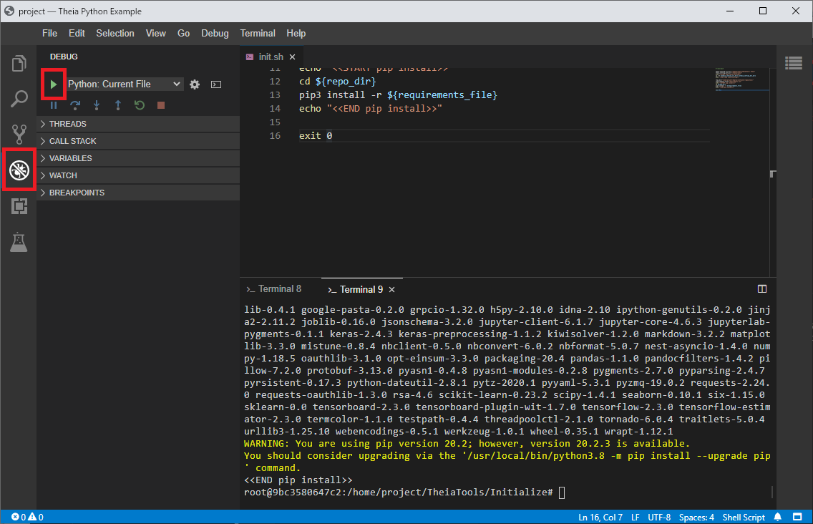

3.5. Deploy¶
3.5.1. edit dockerfile¶
You write install package.
Important
If you need additional software, such as GCC, you will need to include it in your dockerfile.
dockerfile file path
{AIT_ROOT}\deploy\container\dockerfile
Do not edit
dockerfile_license. This is used by create thirdparty notice.
3.5.2. test for theia¶
3.5.2.1. run init.sh in theia¶
cd /home/project/TheiaTools/Initialize/
./init.sh

if this message show, init.sh change CRLF -> LF and save.
bash: ./init.sh: No such file or directory


3.5.2.2. ait execution¶
select
DEBUGand clickrun
if run success, result output
{AIT_ROOT}\local_qai\mnt\ip\job_result\1\1.
3.5.3. build docker image¶
execute bat
{AIT_ROOT}\tool\docker_deploy.bat
3.5.4. create thirdparty notice¶
Important
This script may not work perfectly.
Please check yourself to see if your third-party OSS license is listed.
execute bat
{AIT_ROOT}\tool\generate_thirdparty_notices.bat